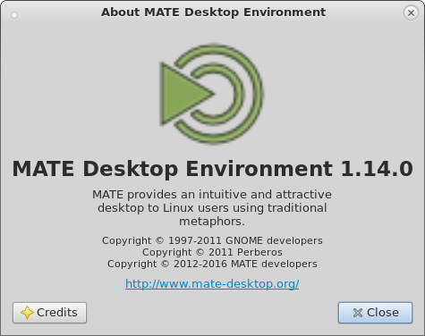

MATE 1.14 released
After 5 months of development the MATE Desktop team are proud to announce the release of MATE Desktop 1.14. We’d like to thank every MATE contributor and user.

What’s new in MATE 1.14
The headline changes in MATE 1.14 are:
- Improved GTK+3 support across the entire MATE Desktop.
- Full GTK 3.20 support in all MATE themes.
- Client Side Decorated applications render correctly in all themes.
- Completely ported MATE System Monitor and Mozo to GTK+3 only.
- Touchpad configuration now supports edge and two-finger scrolling independently.
- Python extensions in Caja can now be managed separately.
- All three window focus modes are selectable.
- MATE Panel now has the ability to change icon sizes for menubar and menu items.
- MATE NetSpeed Applet has been merged into the MATE Applets package.
- MATE Terminal support VTE 2.91 API when built for GTK+3.
- Volume and Brightness OSD can now be enabled/disabled.
- Translations are updated. Thank you to our team of translators!
The various components of MATE 1.14 are available for download here:
Screenshots
Changelog
Here is a more detailed break down of what has changed.
mate-common
- Remove references to obsolete MATE components
mate-desktop
- Drop MateConf migration script and ancient
mate-conf-importtool - Fix deprecated usage of
GtkHBoxandGtkVBoxin GTK+3 build
libmatekbd
- Drop MateConf migration script
- Reduce introspection build warnings
- Fix some GTK+3 deprecations
- Assorted fixes and cleanups
libmatemixer
- Require PulseAudio 2.0 or newer
- Improve error checking in many places
- Fix PulseAudio volume limits
- Some other PulseAudio fixes
- Some fixes and improvements in
alsaandossbackends - Assorted fixes and cleanups
libmateweather
- Drop obsolete build flags
- Small fix in schema
mate-icon-theme
- Add
system-config-keyboardicons
Caja
- Drop MateConf migration script
- Allow closing tabs on middle-click
- List Python extensions separately in extensions list
- GTK+3: add several style classes to simplify theming
- GTK+3: fix desktop flash issue
- GTK+3: a lot of deprecation fixes
- Assorted fixes and cleanups
mate-polkit
- GTK+3: fix several deprecations
Marco
- Drop MateConf migration script
- Fix visual glitches appearing after unmaximizing Chromium window
- Correct description of compositing-fast-alt-tab GSettings key (mention that it disables thumbnails)
- Bump libmarco-private’s sover for GTK+3 build
- GTK+3: re-add ability to show alt-tab thumbnails when compositor is enabled
- GTK+3: fix several deprecations
mate-settings-daemon
- Drop MateConf migration script
- media-keys: add setting to enable/disable OSD
- touchpad: support edge and two-finger scrolling independently (use separate GSettings keys for them)
- xsettings: add settings for cursor theme and size
- GTK+3: several deprecation fixes
- Assorted fixes and cleanups
mate-session-manager
- Drop MateConf migration script
- GTK+3: fix some deprecations
- Assorted fixes and cleanups
mate-menus
- Move
mate-preferences-categories.menuout ofmate-control-center.
This file can be packaged separately so users can decide whether they want categories in the preferences menu or not.
mate-panel
- Drop MateConf migration script
- Add separate “Delete” button in reload applet dialog, and make “Don’t Reload” button do what it says (it won’t delete applet permanently now)
- Make max number of bookmarks in menu (before submenu is created) configurable via GSettings key
- Make icon size of menu items configurable via GSettings key
- Change default menubar icon size to 22px
- Drop “Ubuntu hacks” (
--enable-ubuntubuild option) as Ubuntu dropped that stuff long ago - GTK+3: add several style classes
- GTK+3: add several css names for 3.20
- GTK+3: fix rendering of custom backgrounds with 3.18 and newer
- GTK+3: fix a lot of deprecations
- Assorted fixes and cleanups
mate-themes
- Full support for GTK 3.20.
- Client Side Decorated applications render correctly in all themes.
- Assorted improvements and refinements for all themes
mate-notification-daemon
- Drop MateConf migration script
- GTK+3: explicitly wrap notification text at 50 characters
- GTK+3: stop reversing fg/bg colors in slider theme (use colors from current GTK+ theme as is)
- GTK+3: some more fixes for slider theme
- GTK+3: some deprecation fixes
mate-control-center
- Drop MateConf migration script
- Drop “Ubuntu hacks” (
--enable-ubuntubuild option) as Ubuntu dropped that stuff long ago - Move mate-preferences-categories.menu to mate-menus
- Touchpad settings: support edge and two-finger scrolling independently
- Window properties: make all three window focus modes selectable
- GTK+3: fix theme previews in mate-appearance-properties
- GTK+3: fix several deprecations
- Assorted fixes and cleanups
mate-screensaver
- Drop MateConf migration script
- GTK+3: fix several deprecations
- Assorted fixes and cleanups
mate-media
- GTK+3: add css name
GvcMixerDialogfor 3.20 - GTK+3: fix several deprecations
mate-power-manager
- Drop MateConf migration script
- Fix possible crash when an Xorg function call fails
- GTK+3: fix deprecations in brightness applet
- Assorted fixes and cleanups
mate-system-monitor
- Move to GTK+3, drop GTK+2 code and
--with-gtkbuild option - Set minimum required GTK+ version to 3.14, drop some deprecated code
- Run
gksubinary instead of loadinglibgksu2.so(which is GTK+2 only) - Drop MateConf migration script
- Main window: save maximized state in gsettings on exit and load it on startup
- Disks: add saving and loading width and visibility of columns
- Process properties: show cgroups
- Process properties: show N/A when cgroups or selinux isn’t set
- Process table: show running state when CPU time changes
- Change graph grid line colors and pattern
- Draw the background of graphs explicitly to avoid issues with GTK+ 3.20
- Fix incorrect icons for some known apps like marco or vino
- Assorted fixes and cleanups
Atril
- Drop MateConf migration script
- Update copyrights, mention MATE team in Caja extension
- Use
org.gnome.SessionManagerDBus name to inhibit screensaver - GTK+3: add atril-window style class to top level
- GTK+3: add css name EggToolbarEditor for 3.20
- Assorted fixes and cleanups
caja-extensions
- Drop MateConf migration scripts
- GTK+3: some deprecation fixes
- Assorted fixes and cleanups
Engrampa
- Drop MateConf migration script
- Fix random crash in “open with” dialog
- 7z: avoid problems with ‘?’ char in filenames
- 7z: correct checking for p7zip 15.09+
- rar: avoid “No files to extract” message when disabling overwriting existing files
- tar: allow changing contents of .txz files (like it’s allowed for .tar.xz files)
- unar: avoid problems with ‘?’ char in filenames
Eye of MATE
- Drop MateConf migration script
- Use
org.gnome.SessionManagerDBus name to inhibit screensaver - Auto-reload unmodified images when their file is changed
- GTK+3: add eom-window style class at top level
- GTK+3: add css name EggToolbarEditor for 3.20
- GTK+3: fix SVG rendering
- GTK+3: fix several deprecations
- Assorted more fixes and cleanups
mate-applets
- Drop MateConf migration scripts
- Drop
null_appletwhich isn’t even buildable these days - Re-license command and timer applets under GPL-2+
- Merge netspeed applet from mate-netspeed project (and discontinue that project)
- GTK+3: fix cpufreq applet rendering
- GTK+3: fix setting fg/bg colors and font type in stickynotes applet
- GTK+3: fix several deprecations
- Assorted fixes and cleanups
mate-netbook
- Drop MateConf migration script
- GTK+3: fix some deprecations
- Assorted fixes and cleanups
mate-netspeed
- Has been merged into the
mate-appletspackage.
mate-sensors-applet
- Assorted fixes and cleanups
mate-terminal
- Support VTE 2.91 API in GTK+3 build
- Compile dingu regexes with MULTILINE option
- Fix incorrect ordering of COLS and ROWS in command-line option description and in the manpage
- GTK+3: add style class mate-terminal
- GTK+3: fix window sizes for 3.20
- GTK+3: fix several deprecations
- Assorted fixes and cleanups
mate-user-share
- Drop MateConf migration script
- Don’t translate Keywords field in .desktop files
- GTK+3: fix some deprecations
mate-utils
- Drop MateConf migration scripts
- Disable effects and delay options in mate-screenshot UI when launched with -ai command line argument
- Use hyphens instead of colons in screenshot filenames by default
- GTK+3: fix a lot of deprecations and some UI issues
- Don’t use
-Werrorflag in build - Assorted fixes and cleanups
Mozo
- Ported to GTK+3 and GObject Introspection, dropped old PyGTK related code.
Pluma
- Drop MateConf migration script
- Implement middle-click tab closing
- Add a new Configure dialog for the Spell Check plugin
- Make
switch-ctool in external tools work - Fixed potential shell-code injection
- GTK+3: add style classes pluma-window and pluma-print-preview
- GTK+3: fix several deprecations
- Assorted fixes and cleanups
caja-dropbox
- Minor cleanups